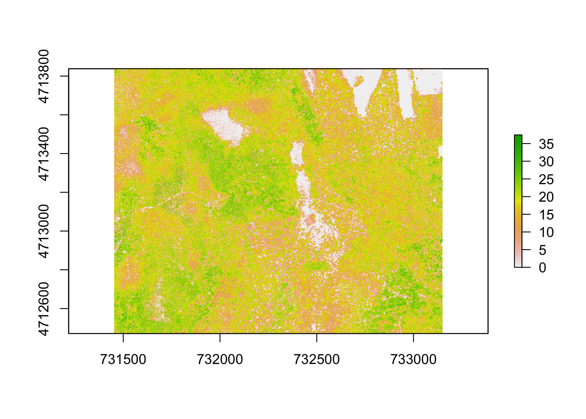
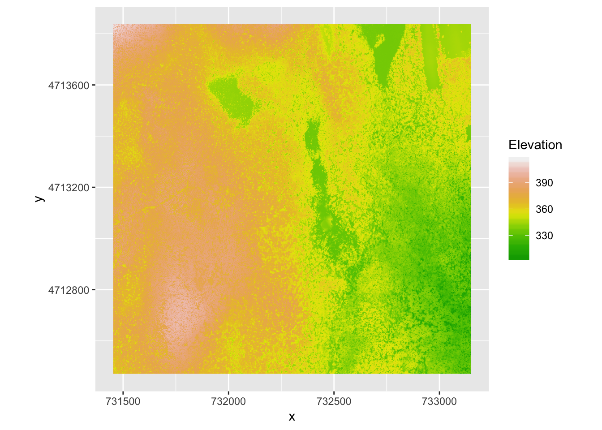
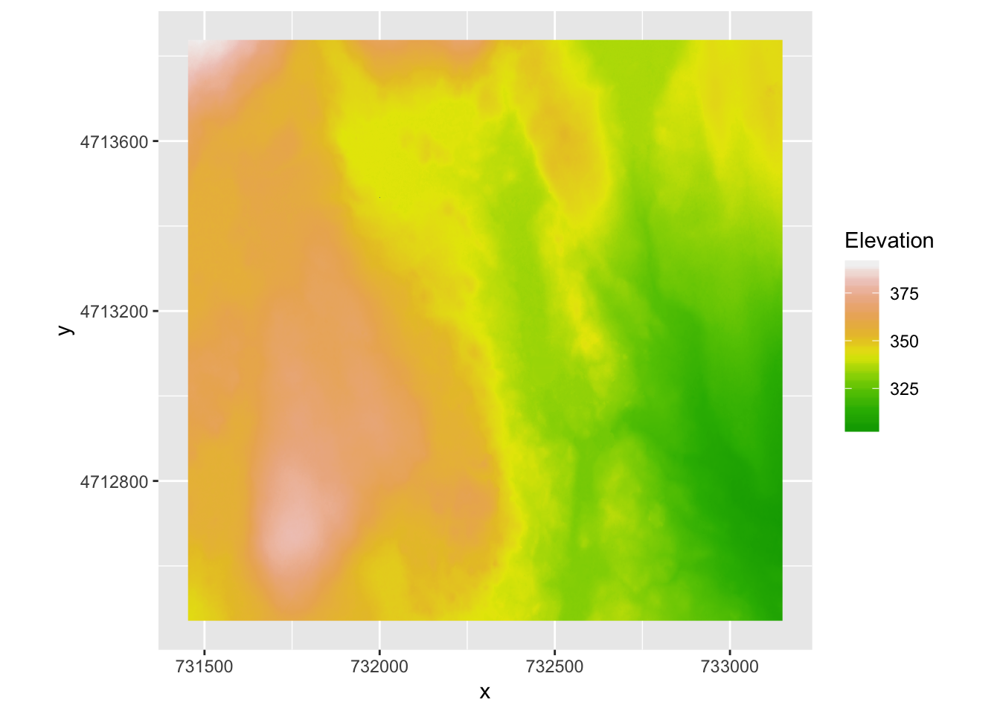
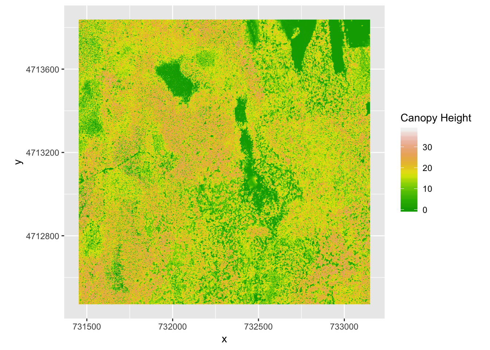
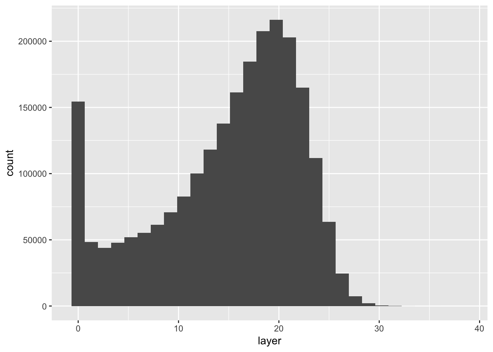
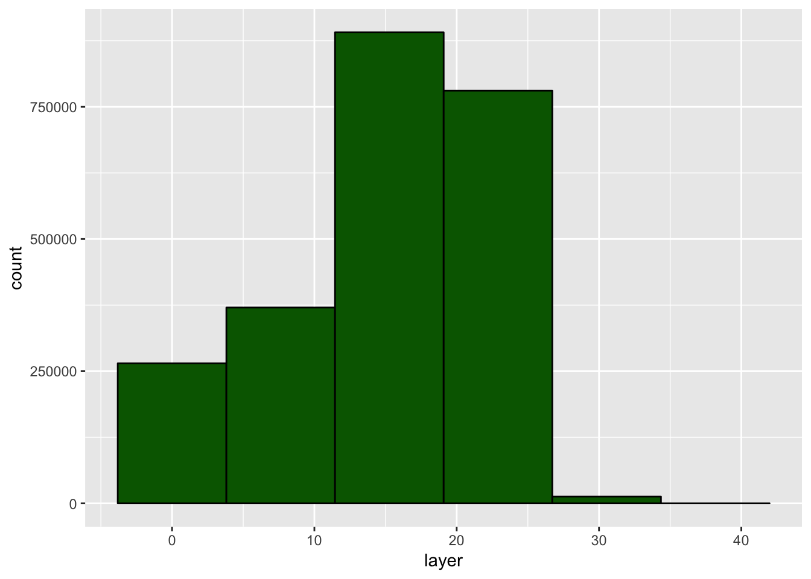
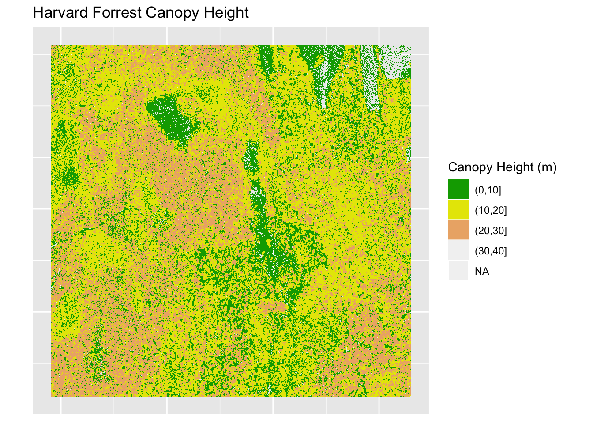
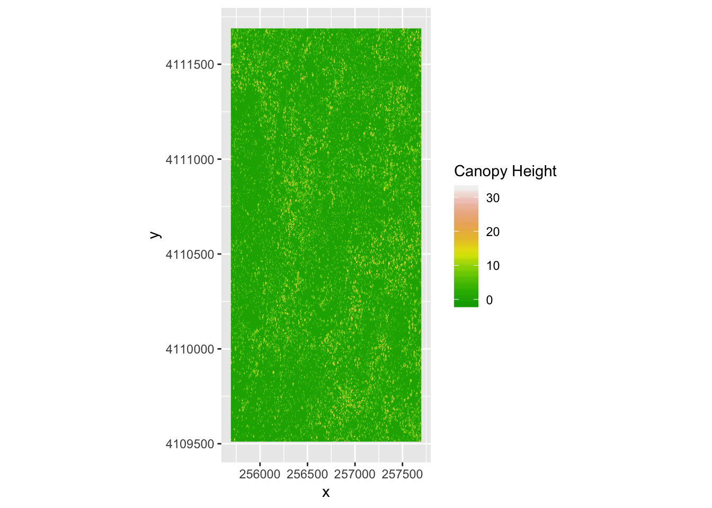
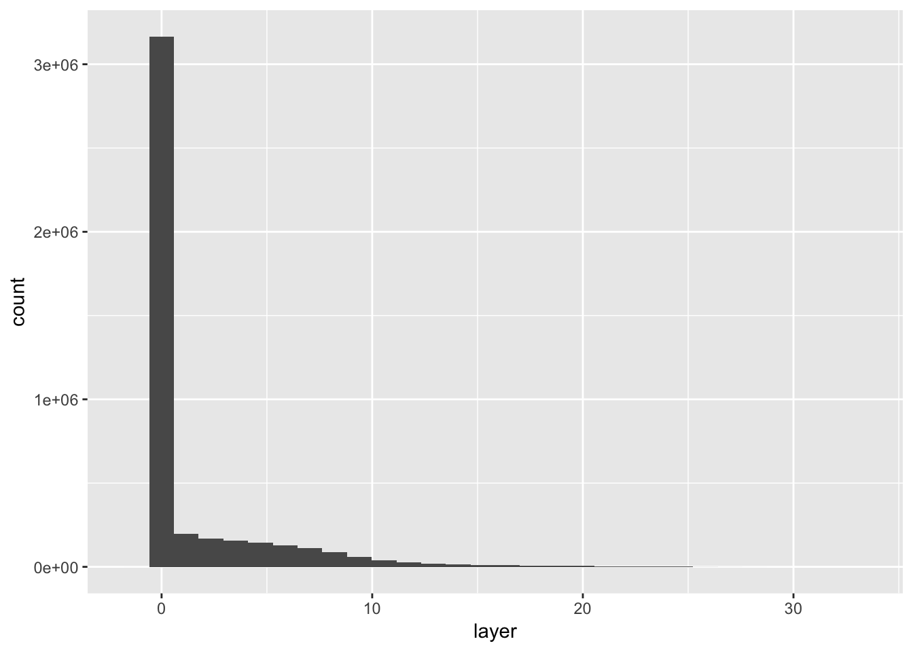

In this lesson we will learn how to calculate a third raster object based on two rasters.
DSM: Digital surface model. This represents the elevation of the highest point (including objects on the surface) on the surface. This means the elevation of the tops of trees and shrubs and other vegetation on the surface, if it exists.
DTM:: Digital Terrain Model. This is just the elevation of the terrain (surface) without the vegetation.
Using these two we will try and calculate the Canopy Height Model: This is the height of the vegetation corrected for the elevation of the terrain. I.e. DSM - DTM.
Use GDALinfo() fucntion to view information about the DTM and DSM data files. Do the two rasters have the same or different CRSs and resolutions? DO they both have defined minimum and maximum values?
Load rgdal and raster libraries if not already loaded
library(rgdal)## Loading required package: sp## rgdal: version: 1.4-3, (SVN revision 828)
## Geospatial Data Abstraction Library extensions to R successfully loaded
## Loaded GDAL runtime: GDAL 2.2.2, released 2017/09/15
## Path to GDAL shared files: /usr/share/gdal/2.2
## GDAL binary built with GEOS: TRUE
## Loaded PROJ.4 runtime: Rel. 4.9.2, 08 September 2015, [PJ_VERSION: 492]
## Path to PROJ.4 shared files: (autodetected)
## Linking to sp version: 1.2-7library(raster)GDALinfo("data/NEON-DS-Airborne-Remote-Sensing/HARV/DSM/HARV_dsmCrop.tif")## rows 1367
## columns 1697
## bands 1
## lower left origin.x 731453
## lower left origin.y 4712471
## res.x 1
## res.y 1
## ysign -1
## oblique.x 0
## oblique.y 0
## driver GTiff
## projection +proj=utm +zone=18 +datum=WGS84 +units=m +no_defs
## file data/NEON-DS-Airborne-Remote-Sensing/HARV/DSM/HARV_dsmCrop.tif
## apparent band summary:
## GDType hasNoDataValue NoDataValue blockSize1 blockSize2
## 1 Float64 TRUE -9999 1 1697
## apparent band statistics:
## Bmin Bmax Bmean Bsd
## 1 305.07 416.07 359.8531 17.83169
## Metadata:
## AREA_OR_POINT=AreaGDALinfo("data/NEON-DS-Airborne-Remote-Sensing/HARV/DTM/HARV_dtmCrop.tif")## rows 1367
## columns 1697
## bands 1
## lower left origin.x 731453
## lower left origin.y 4712471
## res.x 1
## res.y 1
## ysign -1
## oblique.x 0
## oblique.y 0
## driver GTiff
## projection +proj=utm +zone=18 +datum=WGS84 +units=m +no_defs
## file data/NEON-DS-Airborne-Remote-Sensing/HARV/DTM/HARV_dtmCrop.tif
## apparent band summary:
## GDType hasNoDataValue NoDataValue blockSize1 blockSize2
## 1 Float64 TRUE -9999 1 1697
## apparent band statistics:
## Bmin Bmax Bmean Bsd
## 1 304.56 389.82 344.8979 15.86147
## Metadata:
## AREA_OR_POINT=AreaYes they both have the same CRS and res and both have min and max values
If you haven’t already done so, load rasters and convert into data.frames
DSM_HARV <- raster("data/NEON-DS-Airborne-Remote-Sensing/HARV/DSM/HARV_dsmCrop.tif")
DTM_HARV <- raster("data/NEON-DS-Airborne-Remote-Sensing/HARV/DTM/HARV_dtmCrop.tif")
# Convert into dfs
DSM_HARV_df <- as.data.frame(DSM_HARV, xy = TRUE)
DTM_HARV_df <- as.data.frame(DTM_HARV, xy = TRUE)Do quick plots to view the raster/dfs
Load ggplot if haven’t done so.
library(ggplot2)# DSM_HARV
# raster plot
plot(DSM_HARV)
# ggplot
ggplot() +
geom_raster(data = DSM_HARV_df, aes(x = x, y = y, fill = HARV_dsmCrop)) +
scale_fill_gradientn(name = "Elevation", colours = terrain.colors(10)) +
coord_quickmap()
# DTM_HARV
# ggplot
ggplot() +
geom_raster(data = DTM_HARV_df, aes(x = x, y = y, fill = HARV_dtmCrop)) +
scale_fill_gradientn(name = "Elevation", colours = terrain.colors(10)) +
coord_quickmap()
We will subtract DTM from DSM
CHM_HARV <- DSM_HARV - DTM_HARV
# Convert to df
CHM_HARV_df <- as.data.frame(CHM_HARV, xy = TRUE)
str(CHM_HARV_df)## 'data.frame': 2319799 obs. of 3 variables:
## $ x : num 731454 731454 731456 731456 731458 ...
## $ y : num 4713838 4713838 4713838 4713838 4713838 ...
## $ layer: num 19.4 18.7 17.1 17.2 19.7 ...Plot using ggplot
ggplot() +
geom_raster(data = CHM_HARV_df, aes(x = x, y = y, fill = layer)) +
scale_fill_gradientn(name = "Canopy Height", colours = terrain.colors(10)) +
coord_quickmap()
Distribution of canopy heights
ggplot() +
geom_histogram(data = CHM_HARV_df, aes(layer))## `stat_bin()` using `bins = 30`. Pick better value with `binwidth`.## Warning: Removed 1 rows containing non-finite values (stat_bin).
Does the above distribution make sense?
It’s often a good idea to explore the range of values in a raster dataset just like we might explore a dataset that we collected in the field.
CHM_HARV## class : RasterLayer
## dimensions : 1367, 1697, 2319799 (nrow, ncol, ncell)
## resolution : 1, 1 (x, y)
## extent : 731453, 733150, 4712471, 4713838 (xmin, xmax, ymin, ymax)
## coord. ref. : +proj=utm +zone=18 +datum=WGS84 +units=m +no_defs +ellps=WGS84 +towgs84=0,0,0
## data source : in memory
## names : layer
## values : 0, 38.16998 (min, max)ggplot() +
geom_histogram(data = CHM_HARV_df, aes(layer),
bins = 6, colour = "black",
fill = "darkgreen")## Warning: Removed 1 rows containing non-finite values (stat_bin). 4. Load dplyr library
library(dplyr)##
## Attaching package: 'dplyr'## The following objects are masked from 'package:raster':
##
## intersect, select, union## The following objects are masked from 'package:stats':
##
## filter, lag## The following objects are masked from 'package:base':
##
## intersect, setdiff, setequal, unioncustom_bins <- c(0, 10, 20, 30, 40)
CHM_HARV_df <- CHM_HARV_df %>% mutate(canopy_discrete = cut(layer, breaks = custom_bins))## Warning: The `printer` argument is deprecated as of rlang 0.3.0.
## This warning is displayed once per session.# plot
ggplot() +
geom_raster(data = CHM_HARV_df, aes(x = x, y = y, fill = canopy_discrete)) +
scale_fill_manual(name = "Canopy Height (m)", values = terrain.colors(length(custom_bins)-1)) +
ggtitle("Harvard Forrest Canopy Height") +
theme(axis.text = element_blank(), axis.ticks = element_blank(), axis.title = element_blank()) +
coord_quickmap()## Warning: Removed 51136 rows containing missing values (geom_raster).
We use the overlay function when:
Note: If using RasterStacks or RasterBricks, use calc() instead of overlay().
CHM_ov_HARV <- overlay(DSM_HARV,
DTM_HARV,
fun = function(r1, r2) {
return(r1 - r2)
})Convert to df for plotting
CHM_ov_HARV_df <- as.data.frame(CHM_ov_HARV, xy = TRUE)
str(CHM_ov_HARV_df)## 'data.frame': 2319799 obs. of 3 variables:
## $ x : num 731454 731454 731456 731456 731458 ...
## $ y : num 4713838 4713838 4713838 4713838 4713838 ...
## $ layer: num 19.4 18.7 17.1 17.2 19.7 ...Now the plot
ggplot() +
geom_raster(data = CHM_ov_HARV_df, aes(x = x, y = y, fill = layer)) +
scale_fill_gradientn(name = "Canopy Height", colours = terrain.colors(10)) +
coord_quickmap()Compare the two plots from the two different raster calculation methods. They should be identical.
Done using writeRaster() function.
Specify format with format argument (GTiff for us), overwrite argument tells R to overwrite if file exists, and no data values can be specified with NAflag argument (-9999). -9999 is the National Ecology Observation Network’s (NEON) standard NoDataValue.
writeRaster(CHM_ov_HARV,
"data/NEON-DS-Airborne-Remote-Sensing/HARV/CHM/CHM_HARV.tiff",
format = "GTiff",
overwrite = TRUE,
NAflag = -9999)Data are often more interesting and powerful when we compare them across various locations. Let’s compare some data collected over Harvard Forest to data collected in Southern California. The NEON San Joaquin Experimental Range (SJER) field site located in Southern California has a very different ecosystem and climate than the NEON Harvard Forest Field Site in Massachusetts.
Import the SJER DSM and DTM raster files and create a Canopy Height Model. Then compare the two sites. Be sure to name your R objects and outputs carefully, as follows: objectType_SJER (e.g. DSM_SJER). This will help you keep track of data from different sites!
DSM_SJER <- raster("data/NEON-DS-Airborne-Remote-Sensing/SJER/DSM/SJER_dsmCrop.tif")
DTM_SJER <- raster("data/NEON-DS-Airborne-Remote-Sensing/SJER/DTM/SJER_dtmCrop.tif")
DSM_SJER## class : RasterLayer
## dimensions : 2178, 2005, 4366890 (nrow, ncol, ncell)
## resolution : 1, 1 (x, y)
## extent : 255693, 257698, 4109511, 4111689 (xmin, xmax, ymin, ymax)
## coord. ref. : +proj=utm +zone=11 +datum=WGS84 +units=m +no_defs +ellps=WGS84 +towgs84=0,0,0
## data source : /home/z3289452/Documents/GIT_REPOS/19_resbazSydGIS/data/NEON-DS-Airborne-Remote-Sensing/SJER/DSM/SJER_dsmCrop.tif
## names : SJER_dsmCrop
## values : 338.96, 510.35 (min, max)DTM_SJER## class : RasterLayer
## dimensions : 2178, 2005, 4366890 (nrow, ncol, ncell)
## resolution : 1, 1 (x, y)
## extent : 255693, 257698, 4109511, 4111689 (xmin, xmax, ymin, ymax)
## coord. ref. : +proj=utm +zone=11 +datum=WGS84 +units=m +no_defs +ellps=WGS84 +towgs84=0,0,0
## data source : /home/z3289452/Documents/GIT_REPOS/19_resbazSydGIS/data/NEON-DS-Airborne-Remote-Sensing/SJER/DTM/SJER_dtmCrop.tif
## names : SJER_dtmCrop
## values : 338.93, 496.31 (min, max)Res, CRS and units are the same
CHM_SJER <- DSM_SJER - DTM_SJER
CHM_SJER## class : RasterLayer
## dimensions : 2178, 2005, 4366890 (nrow, ncol, ncell)
## resolution : 1, 1 (x, y)
## extent : 255693, 257698, 4109511, 4111689 (xmin, xmax, ymin, ymax)
## coord. ref. : +proj=utm +zone=11 +datum=WGS84 +units=m +no_defs +ellps=WGS84 +towgs84=0,0,0
## data source : /srv/scratch/z3289452/tmp/Rtmp/Rtmp9JY4Yp/raster/r_tmp_2019-09-10_120701_8128_94090.grd
## names : layer
## values : -1.399994, 32.63 (min, max)Using the overlay function:
CHM_ov_SJER <- overlay(DSM_SJER,
DTM_SJER,
fun = function(r1, r2) {
return(r1 - r2)
})
CHM_ov_SJER## class : RasterLayer
## dimensions : 2178, 2005, 4366890 (nrow, ncol, ncell)
## resolution : 1, 1 (x, y)
## extent : 255693, 257698, 4109511, 4111689 (xmin, xmax, ymin, ymax)
## coord. ref. : +proj=utm +zone=11 +datum=WGS84 +units=m +no_defs +ellps=WGS84 +towgs84=0,0,0
## data source : in memory
## names : layer
## values : -1.399994, 32.63 (min, max)In both cases the min is negative!
# Conver to df
CHM_ov_SJER_df <- as.data.frame(CHM_ov_SJER, xy = TRUE)
ggplot() +
geom_raster(data = CHM_ov_SJER_df, aes(x = x, y = y, fill = layer)) +
scale_fill_gradientn(name = "Canopy Height", colours = terrain.colors(10)) +
coord_quickmap()
system("mkdir data/NEON-DS-Airborne-Remote-Sensing/SJER/CHM")
writeRaster(CHM_ov_SJER,
"data/NEON-DS-Airborne-Remote-Sensing/SJER/CHM/CHM_SJER.tiff",
format = "GTiff",
overwrite = TRUE,
NAflag = -9999)# we can compare by plotting histograms
# Harvard forrest
ggplot() +
geom_histogram(data = CHM_HARV_df, aes(layer))## `stat_bin()` using `bins = 30`. Pick better value with `binwidth`.## Warning: Removed 1 rows containing non-finite values (stat_bin).# San Joaquin Env res.
ggplot() +
geom_histogram(data = CHM_ov_SJER_df, aes(layer))## `stat_bin()` using `bins = 30`. Pick better value with `binwidth`. SJER is a lot more barren and had much shorter vegetation.